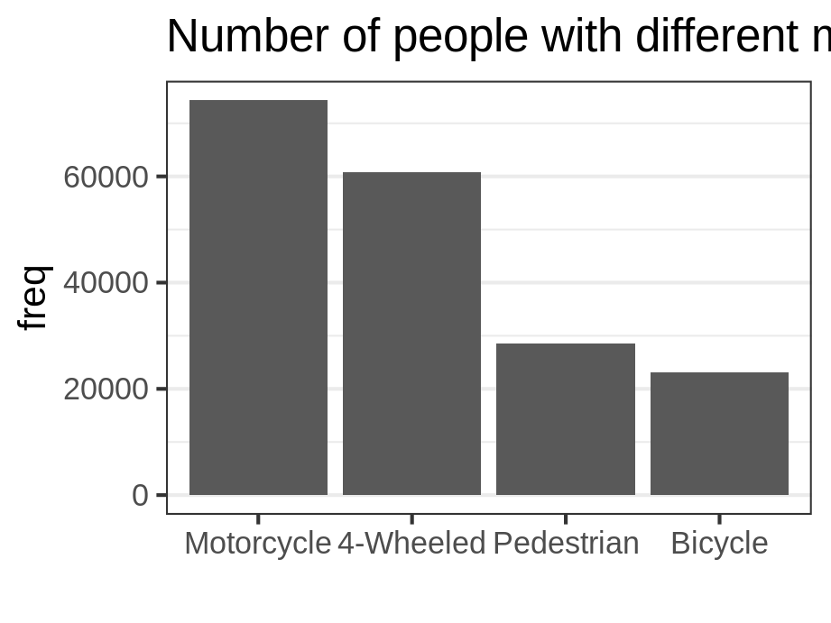
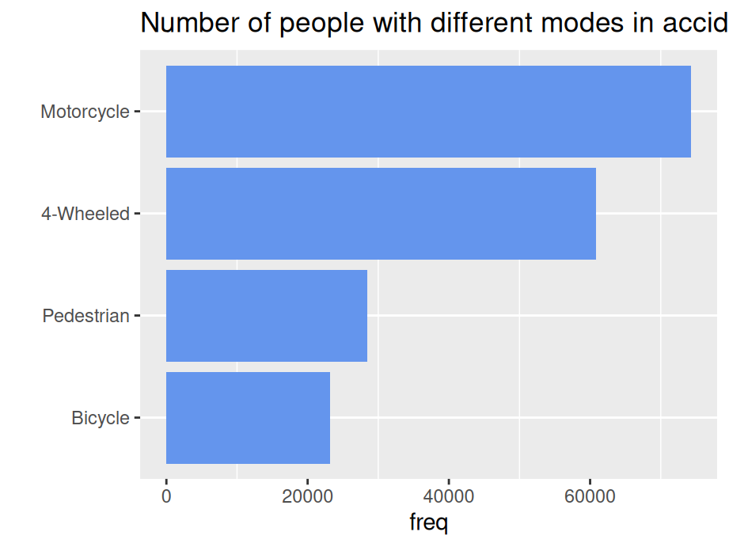
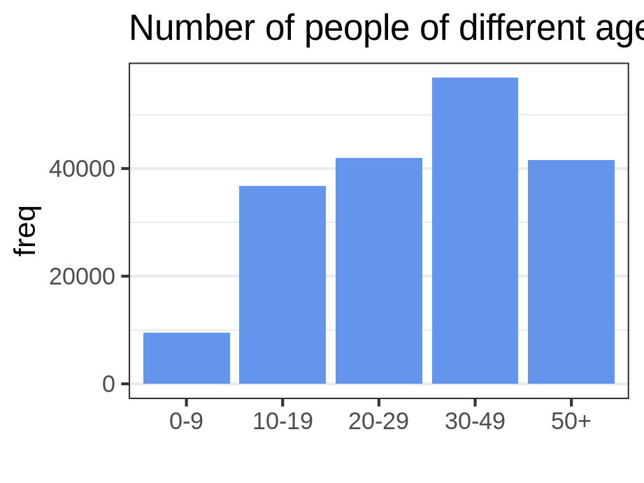
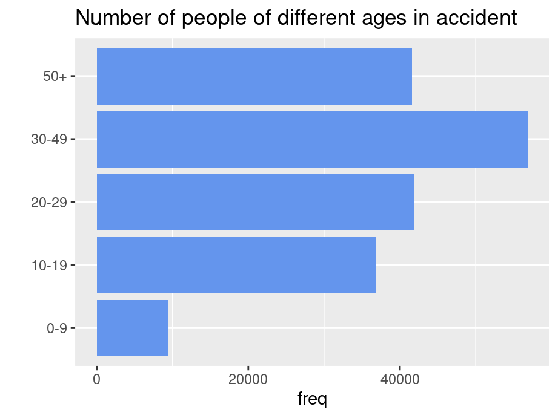
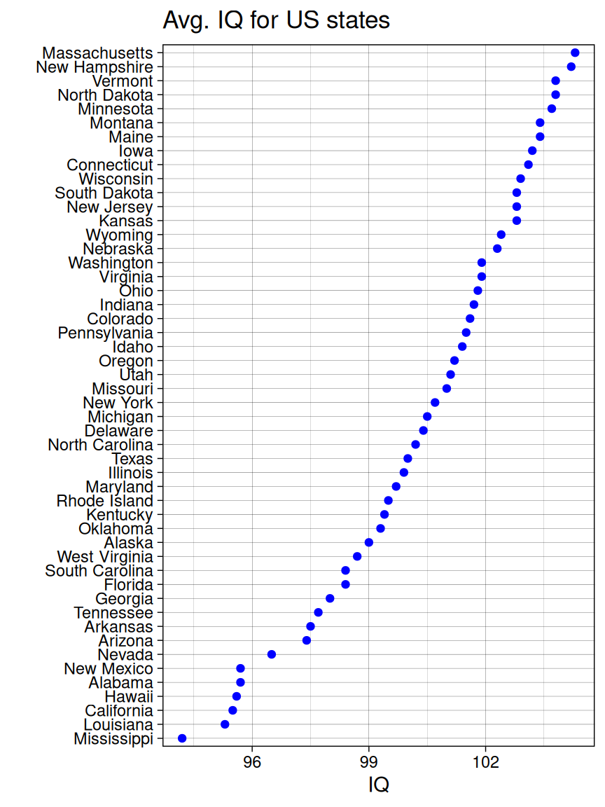
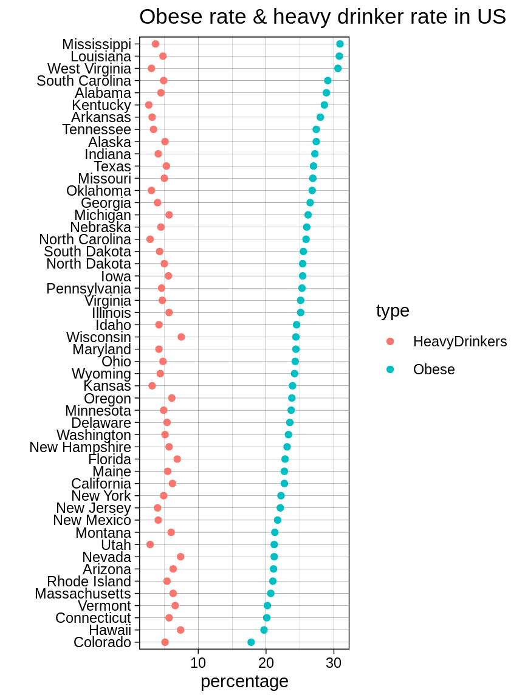
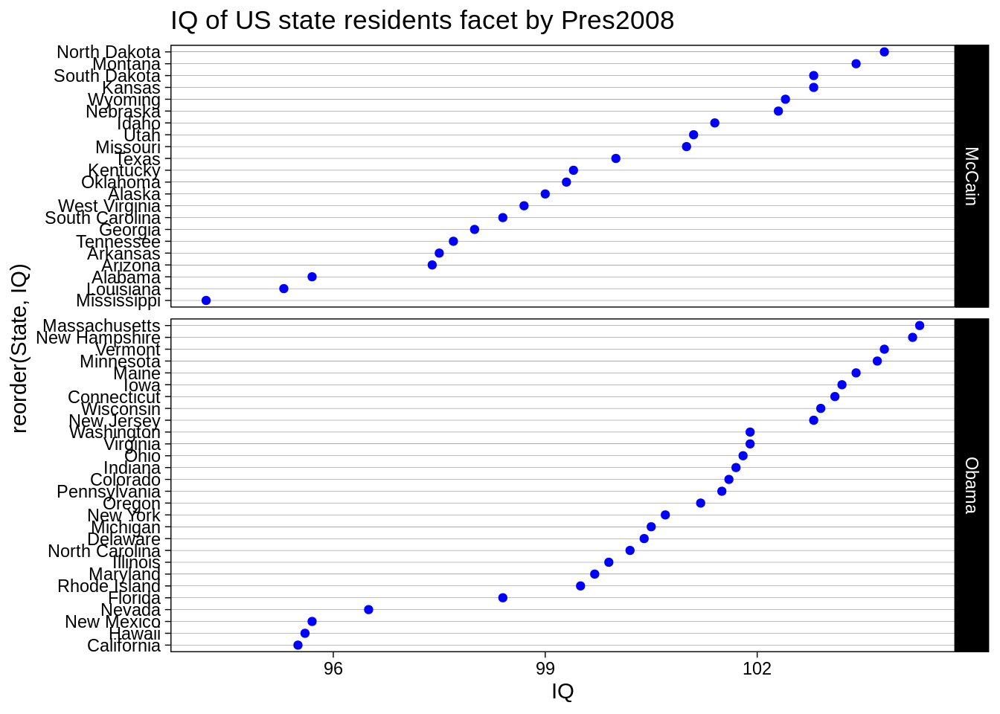
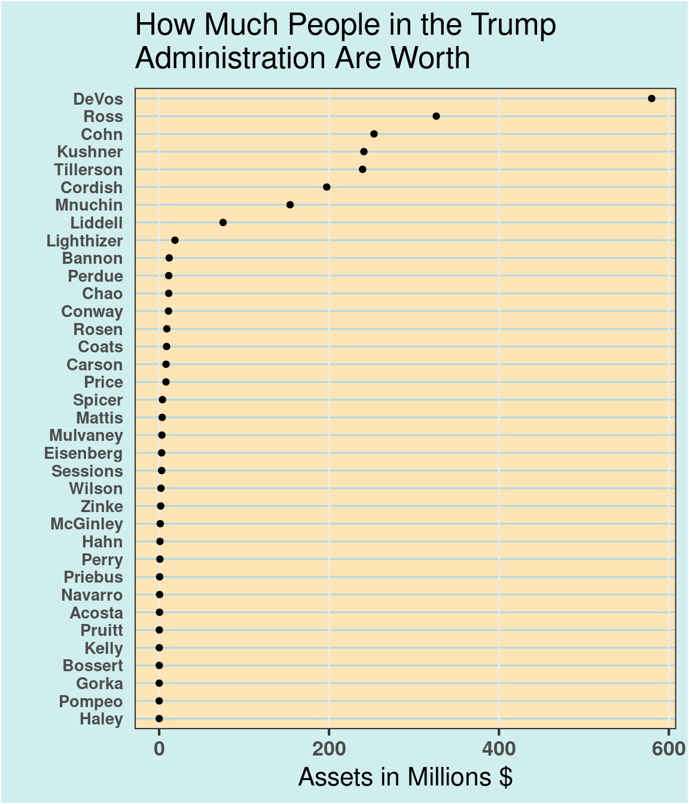
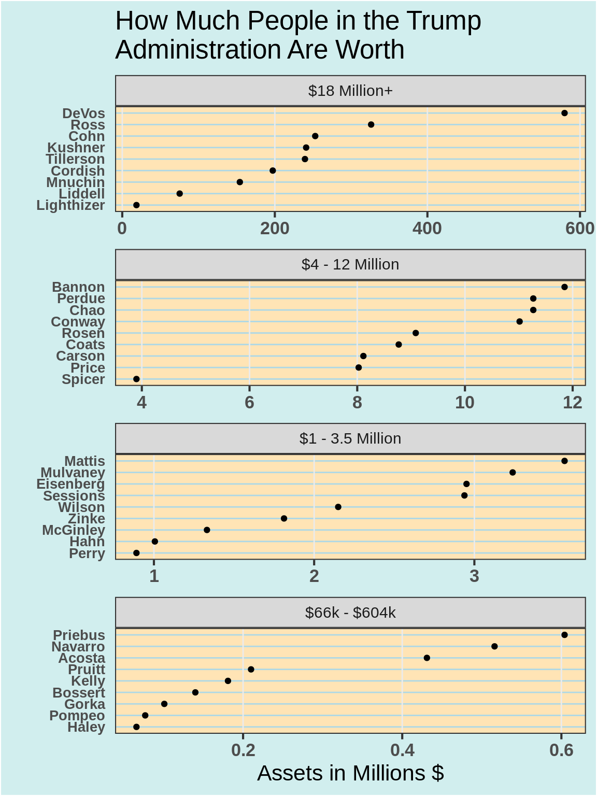

Chapter 10 Unidimensional categorical variables
In real-world datasets, categorical features are quite common but tricky during both the data pre-processing and visualization process. In this chapter, we will demonstrate several plotting options for the uni-dimensional categorical variables with ggplot.
10.1 Bar plot
There are two types of uni-dimensional categorical variables: nominal and ordinal. Here you will be shown how these variables should be plotted differently using bar plot under the same dataset.
10.1.1 Nominal data
Nominal data is data with no fixed category order and should be sorted from highest to lowest count (left to right, or top to bottom)
By default, R always sorts levels in alphabetical order. To reorder it by a sorted value, you can try fct_reorder , fct_rev, fct_relevel in the forcats package
library(vcdExtra)
library(ggplot2)
library(forcats)
library(dplyr)
Accident %>%
group_by(mode) %>%
summarise(freq = sum(Freq)) %>%
ggplot(aes(x=fct_reorder(mode,freq,.desc = TRUE),y=freq)) +
geom_bar(stat = "identity",fill = "cornflowerblue") +
ggtitle("Number of people with different modes in accident") +
xlab("") +
theme(panel.grid.major.x = element_blank())
… or top to bottom
Accident %>%
group_by(mode) %>%
summarise(freq = sum(Freq)) %>%
ggplot(aes(x=fct_rev(fct_reorder(mode,freq,.desc = TRUE)),y=freq)) +
geom_bar(stat = "identity",fill = "cornflowerblue") +
ggtitle("Number of people with different modes in accident") +
coord_flip() +
xlab("") +
theme(panel.grid.major.x = element_blank())
10.1.2 Ordinal data
Ordinal data is data having a fixed category order and need to sort it in logical order of the categories (left to right)
Accident %>%
group_by(age) %>%
summarise(freq = sum(Freq)) %>%
ggplot(aes(x=age,y=freq)) +
geom_bar(stat = "identity",fill = "cornflowerblue") +
ggtitle("Number of people of different ages in accident") +
xlab("") +
theme(panel.grid.major.x = element_blank())
Sort in logical order of the categories (starting at bottom OR top)
Accident %>%
group_by(age) %>%
summarise(freq = sum(Freq)) %>%
ggplot(aes(x=age,y=freq)) +
geom_bar(stat = "identity",fill = "cornflowerblue") +
ggtitle("Number of people of different ages in accident") +
xlab("") +
coord_flip() +
theme(panel.grid.major.x = element_blank())
10.2 Cleveland dot plot
Cleveland dot plot is a good alternative to bar plots, making plots more readable and comparable even with more data. Similarly, we also need to reorder the categorical variables just like what we’ve done for nominal bar plot.
library(Lock5withR)
ggplot(USStates, aes(x = IQ, y = fct_reorder(State, IQ))) +
geom_point(color = "blue") +
ggtitle("Avg. IQ for US states") +
ylab("") +
theme_linedraw()
10.2.1 Cleveland dot plot with multiple dots
Sort by Obese Rate
library(tidyr)
USStates %>%
select('State','Obese','HeavyDrinkers') %>%
gather(key='type',value='percentage',Obese,HeavyDrinkers) %>%
ggplot(aes(x=percentage, y=fct_reorder2(State,type=='Obese',percentage,.desc=FALSE), color = type)) +
geom_point() +
ggtitle("Obese rate & heavy drinker rate in US") +
ylab("") +
theme_linedraw()
10.2.2 Cleveland dot plot with facets
You can split the graph into small multiples using facet_grid().
ggplot(USStates, aes(x = IQ, y = reorder(State, IQ))) +
geom_point(color = "blue") +
facet_grid(Pres2008 ~ ., scales = "free_y", space = "free_y") +
ggtitle('IQ of US state residents facet by Pres2008') +
xlab("IQ") +
ylab('') +
theme_linedraw() +
theme(panel.grid.major.x = element_blank(), panel.grid.minor.x = element_blank())
10.2.3 Example: How Much People in the Trump Administration Are Worth
# create dot plot theme
theme_dotplot <-
theme_bw(16) +
theme(axis.text.y = element_text(size = rel(.8)), axis.ticks.y = element_blank(),
axis.title.x = element_text(), axis.text = element_text(face = "bold"),
plot.background = element_rect(fill = "lightcyan2"),
panel.background = element_rect(fill = "moccasin"),
panel.grid.major.x = element_line(size = 0.5),
panel.grid.major.y = element_line(size = 0.5, color = "lightblue"),
panel.grid.minor.x = element_blank(),
strip.text = element_text(size = rel(.7)), legend.position = "top")
# data source:
# NYT, How Much People in the Trump Administration Are Worth
# https://www.nytimes.com/interactive/2017/04/01/us/politics/how-much-people-in-the-trump-administration-are-worth-financial-disclosure.html
df <- read.csv("data/Assets.csv")
# change units to millions
df$Assets <- df$Assets / 1000000
ggplot(df, aes(x = Assets, y = reorder(Name, Assets))) +
geom_point() +
ggtitle("How Much People in the Trump\nAdministration Are Worth") +
xlab("Assets in Millions $") +
ylab("") +
theme_dotplot
# create Panel column
df <- df |>
mutate(Panel = cut(Assets, 4, breaks = fivenum(Assets),
labels = c("$66k - $604k", "$1 - 3.5 Million",
"$4 - 12 Million", "$18 Million+"))) |> mutate(Panel = fct_rev(Panel))
ggplot(df, aes(x = Assets, y = reorder(Name, Assets))) +
geom_point() +
facet_wrap(~Panel, ncol = 1, scales = "free") +
ggtitle("How Much People in the Trump\nAdministration Are Worth") +
xlab("Assets in Millions $") +
ylab("") +
theme_dotplot